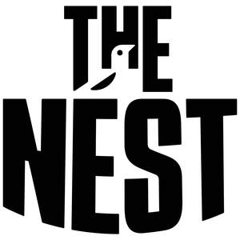

Trade Mark Journal No.2025/033 15 August 2025
UK00004244517 5 August 2025 (16,25,35,38,41,43)

- Class 16
- Paper, cardboard and packaging made of paper and cardboard; printed matter; newspapers; printed publications; photographs; stationery; artists' materials; instructional and teaching material (except apparatus); printers' type; printing blocks; books; diaries; address books; magazines; tickets; programmes; year books; pens; calendars; greeting cards; postcards; occasion cards; posters; printed photographs; office requisites; collectable cards; collectable stickers; sticker books; photograph albums; posters; notepads; paper, card and goods made from those materials, fittings and accessories for all the aforesaid goods.
- Class 25
- Clothing; footwear; headgear; sports clothing; sports footwear; sports headgear; waterproof clothing; replica shirts; neckwear; ties; shirts; socks; shorts; trousers; jackets; coats; leisure suits; leisurewear; T-shirts; jogging suits; underwear; outerwear; nightwear; scarves; hats; visors; gloves; shoes; boots; football boots; swimming trunks; swimwear; rugby shirts; jumpers; knitwear; fleeces; polo shirts; visors; head bands; wristbands; bibs; dresses; robes; pyjamas; dressing gowns; slippers; trainers; slippers; gloves; aprons; fittings and accessories for the all the aforesaid goods.
- Class 35
- Advertising; arranging and conducting of commercial events; business management; business administration; office functions; Accounting; Administrative processing of purchase orders; Advertising by mail order; Advisory services for business management; consumer profiling for commercial or marketing purposes; demonstration of goods; promotion of goods and services through sponsorship of sports events; promotional services; promotion of goods through influencers; providing commercial information and advice for consumers in the choice of products and services; sales promotion for others; Promotion of sports competitions and events; business management of sports people; promotional management of sports personalities.
- Class 38
- Telecommunications services; cable television broadcasting; providing information in the field of telecommunications; live streaming; telecommunications routing and junction services.
- Class 41
- Education; providing of training; entertainment; interactive entertainment services; sporting and cultural activities; live entertainment services; arranging and conducting of entertainment events; arranging and conducting of sports events; booking of seats for shows; club entertainment services; organisation of entertainment services; presentation of live performances; providing information in the field of entertainment; Fan club organisation and services (entertainment); providing information relating to recreational activities; providing sports facilities; providing television programmes, not downloadable, via video-on-demand services / providing television programs, not downloadable, via video-on-demand services; television entertainment; ticket agency services [entertainment]; timing of sports events; organising events for entertainment purposes; Organisation of football competitions; Organising of football events; Organisation of sports events in the field of football; electronic games services provided by means of the Internet; provision of recreational and entertainment facilities; provision of entertainment by means of television and Internet protocol television; information relating to all the foregoing provided by telephone, mobile telephone, on-line from a computer database or via the Internet; consultancy, advisory and information services relating to the foregoing; information, advisory and consultancy services relating to all of the aforesaid services; organising community sporting and cultural events; Social club services for entertainment purposes; management of events for sporting clubs; provision of sporting club facilities. .
- Class 43
- Services for providing food and drink; bar services; food and drink catering; food reviewing services [provision of information about food and drinks]; snack-bar services; hiring of bar, catering and restaurant equipment and facilities; rental of rooms; information relating to all the foregoing provided by telephone, mobile telephone, on-line from a computer database or via the Internet; providing community centres for social gatherings and meetings; private members dining club services; consultancy, advisory and information services relating to the foregoing.
Notts County Football Club Limited
Representative: Level Law Ltd